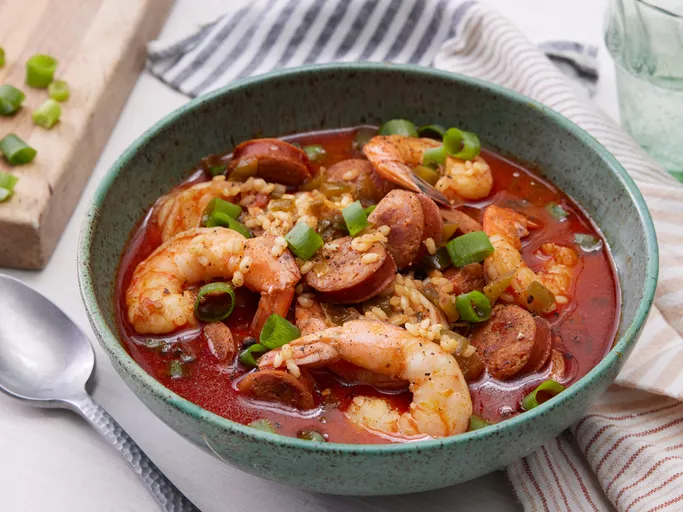

Sausage & Shrimp Jambalaya Recipe
Home

Description
Sausage and shrimp jambalaya is a hearty, flavorful dish that brings together the bold tastes of Cajun cuisine. This one-pot meal is easy to customize and adjust to suit your spice level or ingredient preferences, making it a comforting favorite. Whether you prefer it thicker like a stew or brothier like a soup, it's a versatile dish that is perfect for feeding a crowd. Garnish with green onions or a sprinkle of fresh herbs for a bright finish.
Enjoy this classic Southern comfort food any day of the week!
Prep Time:
15 minutes
Cook Time:
1 hour
Servings:
4
Ingredients
*Note: To double the serving size, multiply each ingredient by 2.
- 2 tablespoons butter
- 8 ounces andouille sausage, cut into 1/4-inch slices
- 2 tablespoons ground paprika
- 1 tablespoon ground cumin
- 1/2 teaspoon cayenne pepper
- 1/2 cup diced tomatoes
- 2 stalks celery, sliced 1/4 inch thick
- 1 large green bell pepper, diced
- 4 green onions, thinly sliced
- 1 teaspoon salt
- 1 bay leaf
- 1 cup uncooked short-grain brown rice
- 3 cups chicken stock
- 1 pound large shrimp, peeled and deveined
- salt and ground black pepper to taste
Steps
- Gather all ingredients.
- Place butter and sausage in a large stockpot over medium heat; cook and stir until sausage begins to brown, 5 to 6 minutes.
- Stir in paprika, cumin, and cayenne; cook for 1 minute.
- Stir tomatoes, celery, green pepper, green onions, salt, and bay leaf into the sausage mixture.
- Add brown rice and stir to combine.
- Stir in chicken stock, bring it to a simmer, then turn heat to low.
- Cover and cook until rice is just tender, about 45 minutes.
- Stir in shrimp, replace lid and cook until shrimp are cooked through, about 5 minutes. Season with salt and black pepper.